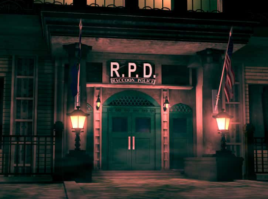
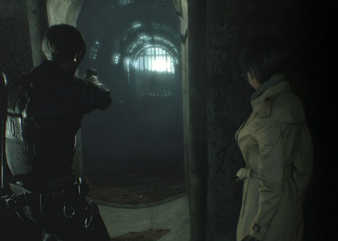
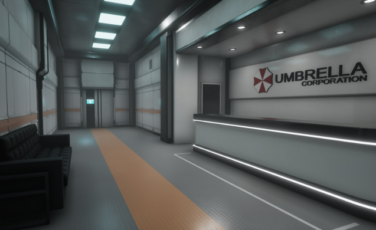

Stazione di Polizia
Primo grande ambiente di gioco, la Stazione di Polizia è un labirinto pieno di misteri e pericoli. Contiene numerosi enigmi e segreti da scoprire.
È il cuore dell’avventura di Leon e Claire e presenta nemici sempre più forti man mano che si procede.
Fogna
Area sotterranea buia e claustrofobica, popolata da creature mutate e pericolose. Le condizioni ambientali rendono la sopravvivenza ancora più difficile.
Qui si affrontano minacce diverse e si raccolgono strumenti indispensabili per proseguire.
Laboratorio Umbrella
Il cuore oscuro della vicenda: il laboratorio segreto dove il virus T è stato creato. Qui si svolgono le battaglie finali contro i boss e si scoprono le terribili verità.